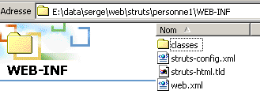
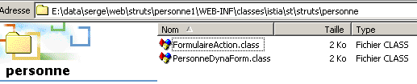
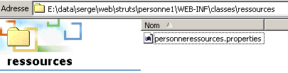
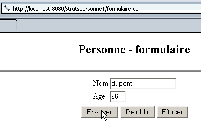

4. Utilização de formulários dinâmicos
4.1. Declaração do formulário dinâmico
Vimos que o Struts utiliza objetos ActionForm para armazenar os valores dos formulários HTML processados pelos vários servlets da aplicação. Para cada formulário na nossa aplicação, precisamos de criar uma classe derivada de ActionForm. Isto pode rapidamente tornar-se complicado, uma vez que, para cada campo xx, temos de escrever dois métodos: setXx e getXx. O Struts oferece a opção de utilizar formulários
- cuja estrutura é declarada no ficheiro struts-config.xml, na secção <form-beans>
- , que são criados dinamicamente pelo ambiente Struts de acordo com a estrutura declarada
Assim, a classe utilizada para armazenar os valores de nome e idade na aplicação strutspersonne poderia ser definida da seguinte forma:
<form-beans>
<form-bean name="frmPersonne" type="org.apache.struts.actions.DynaActionForm">
<form-property name="nom" type="java.lang.String" initial=""/>
<form-property name="age" type="java.lang.String" initial=""/>
</form-bean>
</form-beans>
Para cada campo do formulário, definimos uma tag <form-property> com dois atributos:
- name: o nome do campo
- type: o seu tipo Java
Como os valores de um formulário enviado por um cliente web são cadeias de caracteres, os tipos mais utilizados são java.lang.String para campos de valor único e java.lang.String[] para campos de valores múltiplos (caixas de seleção com o mesmo nome, listas de seleção múltipla, etc.). A classe DynactionForm, tal como a classe ActionForm, possui um método validate que não faz nada. Para que verifique a validade dos parâmetros do formulário, deve estendê-la e escrever o método validate você mesmo. A declaração do formulário será, portanto, a seguinte:
<form-beans>
<form-bean name="frmPersonne" type="istia.st.struts.personne.PersonneDynaForm">
<form-property name="nom" type="java.lang.String" initial=""/>
<form-property name="age" type="java.lang.String" initial=""/>
</form-bean>
</form-beans>
Teremos de escrever nós próprios a classe istia.st.struts.personne.PersonneDynaForm.
4.2. Escrever a classe DynaActionForm associada ao formulário dinâmico
Acima, associamos a classe istia.st.struts.personne.PersonneDynaForm ao formulário (nome, idade). Vamos agora escrever esta classe:
package istia.st.struts.personne;
import javax.servlet.http.*;
import org.apache.struts.action.*;
public class PersonneDynaForm extends DynaActionForm {
// validation
public ActionErrors validate(ActionMapping mapping, HttpServletRequest request) {
// error management
ActionErrors erreurs = new ActionErrors();
// name must be non-empty
String nom = (String)this.get("nom");
if (nom == null || nom.trim().equals("")) {
erreurs.add("nomvide", new ActionError("personne.formulaire.nom.vide"));
}
// age must be non-empty
String age = (String)this.get("age");
if (age == null || age.trim().equals("")) {
erreurs.add("agevide", new ActionError("personne.formulaire.age.vide"));
}
else {
// age must be a positive integer
if (!age.matches("^\\s*\\d+\\s*$")) {
erreurs.add("ageincorrect", new ActionError("personne.formulaire.age.incorrect", age));
// return the list of errors
}
} //if
// return the error list
return erreurs;
}
}//class
Devem ser tidos em conta os seguintes pontos:
- a classe deriva de DynaActionForm
- o método validate da classe DynaActionForm foi reescrito. Quando é executado pelo controlador Struts, o objeto PersonneDynaForm é construído. Este contém um dicionário cujas chaves são os campos do formulário name e age, e cujos valores são os valores desses campos. Para aceder a um campo dentro dos métodos DynaActionForm, utilize o método Object get(String fieldName). Para definir um valor para um campo, utilize o método void set(String fieldName, Object value). Consulte a definição da classe DynaActionForm para obter uma descrição completa.
- Depois de os valores dos campos name e age do formulário terem sido recuperados, o método validate não difere daquele que foi escrito quando o formulário foi associado a um objeto ActionForm.
4.3. A nova classe FormAction
O ficheiro de configuração define a seguinte ação /main:
...
<form-beans>
<form-bean name="frmPersonne" type="istia.st.struts.personne.PersonneDynaForm">
<form-property name="nom" type="java.lang.String" initial=""/>
<form-property name="age" type="java.lang.String" initial=""/>
</form-bean>
</form-beans>
....
<action
path="/main"
name="frmPersonne"
scope="session"
validate="true"
input="/erreurs.do"
type="istia.st.struts.personne.FormulaireAction"
>
<forward name="reponse" path="/reponse.do"/>
</action>
Esta definição é idêntica à da aplicação strutspersonne. A ação /main é implementada por um objeto do tipo FormulaireAction. Este objeto costumava receber os valores do formulário frmPersonne num objeto do tipo FormulaireBean. Agora, recebe-os num objeto do tipo PersonneDynaForm. Por conseguinte, a classe deve ser reescrita:
package istia.st.struts.personne;
import org.apache.struts.action.Action;
import org.apache.struts.action.ActionMapping;
import org.apache.struts.action.ActionForm;
import org.apache.struts.action.ActionForward;
import javax.servlet.http.HttpServletRequest;
import javax.servlet.http.HttpServletResponse;
import java.io.IOException;
import javax.servlet.ServletException;
import istia.st.struts.personne.PersonneDynaForm;
public class FormulaireAction extends Action {
public ActionForward execute(ActionMapping mapping, ActionForm form,
HttpServletRequest request, HttpServletResponse response) throws IOException,ServletException {
// we have a valid form, otherwise we wouldn't have got here
PersonneDynaForm formulaire=(PersonneDynaForm)form;
request.setAttribute("nom",formulaire.get("nom"));
request.setAttribute("age",formulaire.get("age"));
return mapping.findForward("reponse");
}//execute
}
Os seguintes pontos devem ser observados:
- Temos de importar a classe PersonneDynaForm, que contém os dados do formulário, para aceder à sua definição
- O método execute recupera os valores dos parâmetros do formulário utilizando o método [DynaActionForm].get.
Em comparação com a classe FormAction na aplicação strutspersonne, apenas a forma de aceder aos valores do formulário mudou.
4.4. Implantação e teste da aplicação strutspersonne1
4.4.1. Criação do Contexto
Chamámos a esta nova aplicação strutspersonne1. Criamos uma nova definição no ficheiro <tomcat>\conf\serveur.xml para o Tomcat 4.x:
Depois de fazer isto, o Tomcat deve ser reiniciado. Pode verificar a validade do contexto solicitando o URL:
http://localhost:8080/strutspersonne1/

4.4.2. As Visualizações
Copie a pasta views da aplicação strutspersonne para a pasta da aplicação strutspersonne1. As visualizações não sofreram alterações.

4.4.3. Compilação das classes
Temos duas classes para criar: PersonneDynaForm e FormulaireAction, sendo que a última utiliza a primeira. Podemos criá-las e compilá-las utilizando um projeto JBuilder:

4.4.4. A pasta WEB-INF
Copie a pasta WEB-INF da aplicação strutspersonne para a pasta da aplicação strutspersonne1. Alguns ficheiros foram alterados:

O ficheiro de configuração struts-config.xml passa a ter o seguinte conteúdo:
<?xml version="1.0" encoding="ISO-8859-1" ?>
<!DOCTYPE struts-config PUBLIC
"-//Apache Software Foundation//DTD Struts Configuration 1.1//EN"
"http://jakarta.apache.org/struts/dtds/struts-config_1_1.dtd">
<struts-config>
<form-beans>
<form-bean name="frmPersonne" type="istia.st.struts.personne.PersonneDynaForm">
<form-property name="nom" type="java.lang.String" initial=""/>
<form-property name="age" type="java.lang.String" initial=""/>
</form-bean>
</form-beans>
<action-mappings>
<action
path="/main"
name="frmPersonne"
scope="session"
validate="true"
input="/erreurs.do"
type="istia.st.struts.personne.FormulaireAction"
>
<forward name="reponse" path="/reponse.do"/>
</action>
<action
path="/erreurs"
parameter="/vues/erreurs.personne.jsp"
type="org.apache.struts.actions.ForwardAction"
/>
<action
path="/reponse"
parameter="/vues/reponse.personne.jsp"
type="org.apache.struts.actions.ForwardAction"
/>
<action
path="/formulaire"
parameter="/vues/formulaire.personne.jsp"
type="org.apache.struts.actions.ForwardAction"
/>
</action-mappings>
<message-resources parameter="ressources.personneressources"/>
</struts-config>
Este ficheiro é idêntico ao da aplicação strutspersonne, com exceção da definição do formulário dinâmico (secção em caixa).
Na pasta WEB-INF/classes, coloque as classes compiladas pelo JBuilder:

Na pasta WEB-INF\classes\resources, coloque o ficheiro de mensagens. Este não sofreu alterações.
personne.formulaire.nom.vide=<li>Vous devez indiquer un nom</li>
personne.formulaire.age.vide=<li>Vous devez indiquer un age</li>
personne.formulaire.age.incorrect=<li>L'âge [{0}] est incorrect</li>
errors.header=<ul>
errors.footer=</ul>

4.5. Testes
Estamos prontos para os testes. Abaixo estão algumas capturas de ecrã que o leitor é convidado a reproduzir.
Solicite o URL http://localhost:8080/strutspersonne1/formulaire.do:

Clique no botão [Enviar] sem preencher os campos:

Tente novamente com um erro no campo da idade:

Recebemos a seguinte resposta:

Tente novamente, desta vez introduzindo os valores corretos:

Recebemos a seguinte resposta:

4.6. Conclusão
A utilização de formulários dinâmicos facilita a escrita de classes ActionForm responsáveis pelo armazenamento dos valores do formulário. Podemos levar a gestão de formulários um passo mais além. Na aplicação strutspersonne1, criámos uma classe PersonneDynaForm para validar os valores do formulário (nome, idade). Na prática, certas validações ocorrem com frequência: campo não vazio, campo que valida uma expressão regular específica, campo inteiro, campo de data, etc. Este tipo de validação padrão pode então ser especificado no ficheiro de configuração struts-config.html. Se todas as validações a realizar forem «padrão», não há necessidade de escrever uma classe para o formulário. É isso que vamos agora examinar.